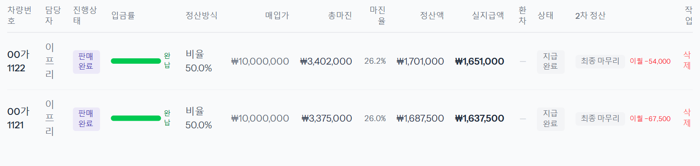

1단계
「정산 처리」에서 2차 정산 칸을 봅니다
지급완료된 정산은 맨 오른쪽 「2차 정산」 칸에 노란 「비용 대기」가 붙습니다. 지급 뒤에 들어온 비용이 아직 없다는 뜻입니다.

1차 정산을 지급한 뒤, 업체 명세서로 청구된 실제 비용(탁송비 등)을 넣고 정산을 마무리하는 단계입니다. 재무가 합니다. 보통은 명세서를 「명세서 기입」으로 한 번에 올리고 → 「이 달 2차 일괄 마감」으로 끝냅니다. 비용이 들어간 정산은 「2차 정산」 칸이 「비용 대기」 → 「2차 가능」이 되고, 마감하면 「최종 마무리」가 되며 회계 칸이 잠깁니다.
2026-11-14 로컬 화면에서 「재무」 계정으로 예시 차량 00가1121 · 00가1122(판매완료 · 정산 지급완료 · 프리랜서 50%)를 실제로 저장하며 찍었습니다. 명세서 금액은 가이드용 예시입니다.
지급완료된 정산은 맨 오른쪽 「2차 정산」 칸에 노란 「비용 대기」가 붙습니다. 지급 뒤에 들어온 비용이 아직 없다는 뜻입니다.

차량번호로 맞춘 차가 「매칭 N대」로 보입니다. 「현재」 금액과 「새 금액」을 확인하고 [일괄 기입]을 누릅니다.

지급 뒤에 비용이 실제로 바뀐 정산은 「2차 정산」 칸이 「2차 가능」으로 바뀌고, 옆에 이번 마감으로 넘어갈 금액이 「이월 −67,500」처럼 붙습니다. 총마진·정산액·실지급액도 바로 다시 계산됩니다.

줄을 누르면 「2차 차액」에서 내역을 볼 수 있습니다. 예시 00가1121은 탁송비 150,000이 늘어 총마진이 135,000(× 0.9) 줄었고, 그 50%인 −67,500이 다음 달 정산으로 넘어갑니다.

창에 「마감할 정산」 목록이 뜹니다. 「2차 가능」인 정산만 들어갑니다. 확인하고 [2건 마감]을 누릅니다.

「2차 정산」 칸이 회색 「최종 마무리」가 되고, 이월 금액은 그대로 남아 다음 달 정산에 들어갑니다.

지급이 끝난 차라도 2차 대기 동안은 비용 칸 위에 「⏳ 2차 정산 대기 — 실측 정정 가능」 띠가 뜨고 비용을 고칠 수 있습니다. 저장하면 정산이 「2차 가능」으로 바뀝니다. 마감은 그 줄의 [2차 완료]로 한 대씩 해도 됩니다(확인 창 「2차 정산을 최종 마무리하시겠습니까? 이후 회계 컬럼 잠금됩니다.」).